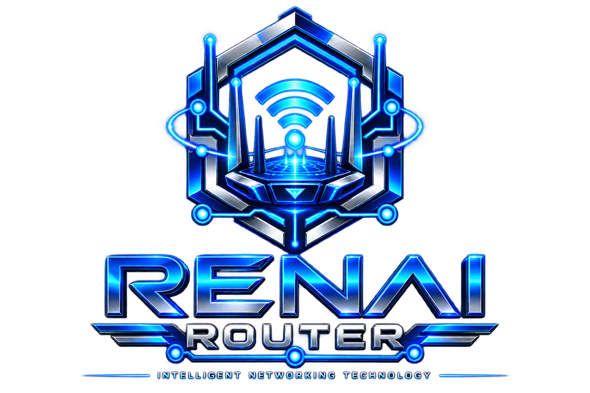
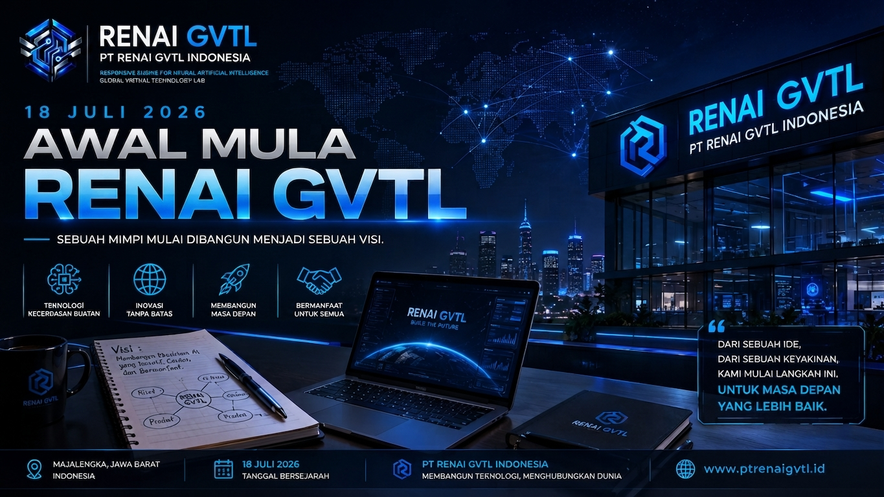

01
Foundation Stage
PT RENAI GVTL Indonesia berada pada Foundation Stage. Fokus saat ini adalah membangun fondasi organisasi, tata kelola, dokumentasi, sistem kerja, dan arah pengembangan perusahaan.

PT RENAI GVTL Indonesia adalah perusahaan teknologi asal Majalengka, Jawa Barat, Indonesia yang berfokus pada Artificial Intelligence, riset teknologi, pengembangan perangkat lunak, infrastruktur AI, dan pembangunan ekosistem teknologi RENAI GVTL.
Dari Majalengka menuju panggung global. RENAI GVTL dibangun melalui riset, eksperimen, dokumentasi, dan pengembangan teknologi secara bertahap.
Identitas publik PT RENAI GVTL Indonesia dipusatkan pada satu entitas, satu brand teknologi, dan dokumentasi pengembangan yang konsisten.
PT RENAI GVTL Indonesia merupakan perusahaan teknologi yang berfokus pada Artificial Intelligence, riset, pengembangan perangkat lunak, infrastruktur teknologi, dan ekosistem RENAI GVTL. Perusahaan saat ini berada pada Foundation Stage, yaitu tahap pembangunan fondasi organisasi, tata kelola, dokumentasi, riset, pengembangan teknologi, dan persiapan aspek legalitas.
PT RENAI GVTL Indonesia berada pada Foundation Stage. Fokus saat ini adalah membangun fondasi organisasi, tata kelola, dokumentasi, sistem kerja, dan arah pengembangan perusahaan.
Riset dan eksperimen Artificial Intelligence dilakukan untuk mengeksplorasi pendekatan, arsitektur, dan teknologi yang dapat dikembangkan dalam ekosistem RENAI GVTL.
Pengembangan diarahkan pada perangkat lunak, AI infrastructure, sistem, komponen teknologi, serta proyek seperti RENAI Router dan Chat GVTL.
PT RENAI GVTL Indonesia saat ini berada dalam tahap Foundation Stage. Pembangunan perusahaan tidak hanya berfokus pada teknologi, tetapi juga mencakup tata kelola, dokumentasi organisasi, struktur peran, administrasi, dan persiapan aspek legalitas.
Fondasi tata kelola perusahaan sedang disusun dan dikembangkan agar arah, struktur, tanggung jawab, dokumentasi, dan proses organisasi dapat berkembang secara terarah.
Aspek pendaftaran, badan hukum, dan legalitas perusahaan masih berada pada tahap persiapan dan pengembangan. Penyesuaian legalitas akan dilakukan seiring dengan perkembangan organisasi dan tahapan perusahaan.
PT RENAI GVTL Indonesia dibangun secara independen oleh Founder & Owner, Reno Aurora Redian Narendra Wijaya Putra Silvana, tanpa menyatakan keterkaitan kepemilikan atau pendirian dengan pihak eksternal lainnya.
Informasi mengenai PT RENAI GVTL Indonesia pada website ini menggambarkan identitas, struktur peran, kegiatan pengembangan, dan perjalanan organisasi pada tahap Foundation Stage.
Status pendaftaran, badan hukum, dan legalitas perusahaan masih dalam proses persiapan dan pengembangan. Aspek tersebut akan disesuaikan dan dikembangkan seiring berjalannya waktu sesuai dengan tahapan organisasi dan kebutuhan tata kelola.
Pernyataan ini tidak dimaksudkan sebagai klaim bahwa seluruh proses legalitas telah selesai atau bahwa perusahaan telah memperoleh status badan hukum tertentu.
PT RENAI GVTL Indonesia menyampaikan kondisi legalitas perusahaan secara terbuka sebagai bagian dari komitmen terhadap transparansi.
Saya, Reno Aurora Redian Narendra Wijaya Putra Silvana, selaku Founder & Owner PT RENAI GVTL Indonesia, menyatakan bahwa pada tanggal 28 Agustus 2026, perusahaan ini belum memiliki legalitas hukum yang telah diselesaikan secara resmi.
Kondisi tersebut berkaitan dengan tahap pembangunan perusahaan serta keterbatasan pada aspek administrasi, sumber daya, kesiapan organisasi, dan kebutuhan lain yang masih harus dipersiapkan sebelum proses legalitas dapat diselesaikan.
Meskipun demikian, upaya untuk mempersiapkan dan mengurus legalitas perusahaan sedang dilakukan secara bertahap. Legalitas menjadi bagian penting dari pembangunan fondasi PT RENAI GVTL Indonesia dan akan terus diusahakan seiring dengan kesiapan serta perkembangan organisasi.
Untuk menjaga transparansi, website ini tidak menyatakan bahwa PT RENAI GVTL Indonesia telah memiliki status badan hukum tertentu, telah menyelesaikan seluruh proses pendaftaran, atau telah memperoleh seluruh perizinan yang diperlukan.
Informasi mengenai legalitas akan diperbarui apabila terdapat perkembangan resmi dalam proses tersebut.
“Pada tanggal 28 Agustus 2026, saya menyatakan bahwa PT RENAI GVTL Indonesia belum memiliki legalitas hukum yang telah diselesaikan secara resmi. Proses dan persiapan legalitas sedang kami usahakan secara bertahap sebagai bagian dari pembangunan fondasi perusahaan.”
— Reno Aurora Redian Narendra Wijaya Putra Silvana
Founder & Owner
PT RENAI GVTL Indonesia
28 Agustus 2026
PT RENAI GVTL Indonesia dibangun dari sebuah lingkungan yang jauh dari pusat industri teknologi global. Namun tempat bermulanya sebuah karya tidak menentukan sejauh mana karya tersebut dapat berkembang.
Membawa karya dari kampung kecil menuju panggung global.
Membangun karya teknologi dari Indonesia, khususnya dari Majalengka, dan membawa hasil pemikiran, riset, inovasi, serta teknologi tersebut menuju jangkauan yang lebih luas hingga tingkat global.
Perjalanan PT RENAI GVTL Indonesia dimulai dari Majalengka. Namun arah perusahaan ditujukan untuk melampaui batas wilayah tempat perusahaan tersebut bermula.
Setiap karya dikembangkan dengan semangat untuk membuktikan bahwa inovasi tidak hanya dapat lahir dari pusat teknologi dunia, tetapi juga dapat tumbuh dari tempat yang sederhana.
Dari kampung kecil, membangun karya, menuju panggung global.
PT RENAI GVTL Indonesia percaya bahwa teknologi dapat dikembangkan dari mana saja. Majalengka bukan sekadar lokasi tempat perusahaan bermula, tetapi menjadi bagian dari cerita bagaimana sebuah karya teknologi dibangun dari tahap awal.
Perusahaan ingin bertumbuh melalui karya yang nyata, riset yang konsisten, pengembangan yang bertahap, dan keberanian untuk membawa hasilnya ke tingkat yang lebih luas.
RENAI GVTL merupakan identitas ekosistem teknologi Artificial Intelligence yang dikembangkan oleh PT RENAI GVTL Indonesia. Nama RENAI memiliki asal-usul dari Reno + Artificial Intelligence dan kemudian digunakan sebagai identitas teknologi dengan kepanjangan Responsive Engine for Neural Artificial Intelligence.
“REN” berasal dari bagian nama Reno dan menjadi dasar identitas awal nama RENAI.
“AI” berasal dari Artificial Intelligence, bidang teknologi yang menjadi salah satu fokus utama pengembangan RENAI.
Dalam pengembangan identitas teknologinya, RENAI digunakan sebagai akronim Responsive Engine for Neural Artificial Intelligence.
GVTL merupakan singkatan dari Global Virtual Technology Lab dan menjadi bagian dari identitas ekosistem RENAI GVTL.
PT RENAI GVTL Indonesia mengembangkan berbagai arah teknologi dalam ekosistem RENAI GVTL. Setiap proyek memiliki tahap pengembangan yang berbeda dan dapat terus mengalami perubahan selama proses riset dan eksperimen berlangsung.
Identitas ekosistem Artificial Intelligence yang menjadi salah satu arah utama pengembangan PT RENAI GVTL Indonesia.
Jelajahi RENAI GVTL →
Komponen infrastruktur AI yang sedang dikembangkan sebagai bagian dari arsitektur RENAI GVTL, termasuk eksplorasi routing, metadata, dan provenance teknologi.
Lihat RENAI Router →
Platform AI berbasis percakapan yang sedang dikembangkan melalui riset, eksperimen, pengembangan sistem, dan penyempurnaan teknologi.
Jelajahi Chat GVTL →
Arah pengembangan teknologi visual dan generative AI dalam ekosistem RENAI yang masih berada pada tahap riset, eksplorasi, dan pengembangan awal.
Lihat Pengembangan →RENAI Router merupakan salah satu komponen infrastruktur teknologi AI yang sedang dikembangkan dalam ekosistem RENAI GVTL.
Pengembangannya diarahkan untuk mengeksplorasi routing, metadata, provenance, integritas data, serta pengelolaan alur teknologi AI yang dapat mendukung proyek seperti Chat GVTL.
Teknologi ini masih berada dalam tahap Research & Development. Arsitektur, fungsi, spesifikasi, dan implementasinya dapat berubah seiring proses penelitian dan eksperimen.
Pengembangan teknologi PT RENAI GVTL Indonesia dilakukan secara bertahap dengan menjaga proses riset, eksperimen, validasi, dan pembangunan fondasi sebelum teknologi diperluas.
Riset, eksperimen, observasi, dan eksplorasi berbagai pendekatan teknologi Artificial Intelligence.
Pengembangan fondasi arsitektur dan komponen teknologi seperti RENAI Router serta sistem pendukung lainnya.
Pengembangan proyek teknologi seperti Chat GVTL melalui proses riset, pengujian, dan penyempurnaan.
Pengembangan ekosistem RENAI GVTL secara bertahap dengan orientasi terhadap kebutuhan teknologi yang lebih luas.
PT RENAI GVTL Indonesia memiliki identitas pengembangan yang berasal dari Majalengka, Jawa Barat, Indonesia. Majalengka menjadi bagian penting dari perjalanan pembangunan perusahaan, riset Artificial Intelligence, dan pengembangan teknologi RENAI GVTL.
PT RENAI GVTL Indonesia mengembangkan teknologi dari Indonesia dengan fokus pada Artificial Intelligence, perangkat lunak, dan infrastruktur teknologi.
Jawa Barat menjadi bagian dari identitas geografis perusahaan dan perjalanan pengembangan teknologi RENAI GVTL.
Majalengka merupakan asal pengembangan PT RENAI GVTL Indonesia dan bagian penting dari identitas perusahaan.
Website ini merupakan website resmi PT RENAI GVTL Indonesia yang digunakan untuk menyampaikan informasi mengenai identitas perusahaan, perjalanan organisasi, founder, technology leadership, riset, pengembangan Artificial Intelligence, serta ekosistem teknologi RENAI GVTL.
Website ini juga menjadi dokumentasi perkembangan perusahaan pada Foundation Stage, termasuk pembangunan fondasi organisasi, tata kelola, persiapan legalitas, riset, eksperimen, dan pengembangan teknologi.
Dokumentasi perkembangan perusahaan, teknologi, riset, dan proyek RENAI GVTL melalui berita dan catatan resmi.

Chat GVTL dikembangkan dengan RENAI Router sebagai bagian dari riset dan pengembangan teknologi.
Product / Development
Catatan awal perjalanan pembangunan perusahaan teknologi PT RENAI GVTL Indonesia.
Company / Foundation
Mengenal Founder dan visi dalam membangun fondasi teknologi RENAI GVTL.
Founder / Vision
Founder dan Owner PT RENAI GVTL Indonesia yang mendirikan dan mengembangkan perusahaan secara independen serta memegang arah pendirian, kepemilikan, visi, dan pembangunan fondasi perusahaan serta ekosistem RENAI GVTL.
Pengembangan perusahaan dimulai dari Majalengka, Jawa Barat, Indonesia, dengan fokus pada riset Artificial Intelligence, pengembangan perangkat lunak, dan pembangunan teknologi secara bertahap.
Fungsi teknologi dan riset menjadi bagian dari pembangunan fondasi teknis PT RENAI GVTL Indonesia dan pengembangan ekosistem teknologi RENAI GVTL.
PT RENAI GVTL Indonesia berada pada Foundation Stage. Founder & Owner memegang arah pendirian, kepemilikan, visi, dan pembangunan fondasi perusahaan.
Fungsi teknologi dan riset dipimpin melalui peran Chief Technology Officer (CTO) untuk mendukung pembangunan ekosistem RENAI GVTL, termasuk RENAI Router, Chat GVTL, RENAI Image, dan eksplorasi teknologi Artificial Intelligence lainnya.
Struktur organisasi dan tata kelola perusahaan akan terus dikembangkan seiring pertumbuhan organisasi serta persiapan aspek administrasi dan legalitas perusahaan.
PT RENAI GVTL Indonesia merupakan perusahaan teknologi asal Majalengka, Jawa Barat, Indonesia yang berfokus pada Artificial Intelligence, riset teknologi, pengembangan perangkat lunak, infrastruktur AI, dan pembangunan ekosistem RENAI GVTL.
Perusahaan didirikan dan dikembangkan secara independen oleh Reno Aurora Redian Narendra Wijaya Putra Silvana sebagai Founder & Owner.
Saat ini perusahaan masih berada pada Foundation Stage. Fokus utama mencakup pembangunan fondasi organisasi, tata kelola, dokumentasi, riset, eksperimen, pengembangan teknologi, serta persiapan aspek pendaftaran, badan hukum, dan legalitas yang akan disesuaikan dan dikembangkan seiring berjalannya waktu.
Ekosistem RENAI GVTL mencakup berbagai arah pengembangan teknologi seperti RENAI Router, Chat GVTL, RENAI Image, serta penelitian dan eksperimen Artificial Intelligence lainnya.